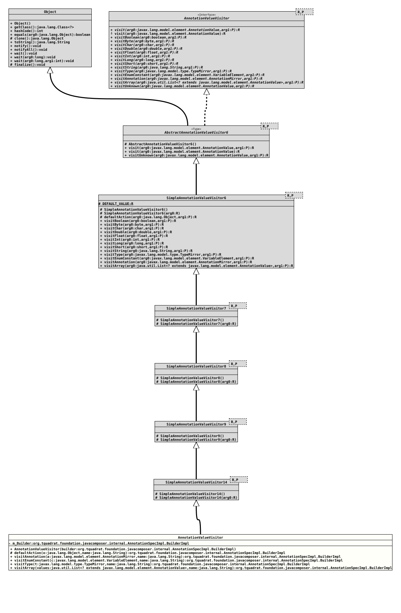

Class AnnotationValueVisitor
java.lang.Object
javax.lang.model.util.AbstractAnnotationValueVisitor6<AnnotationSpecImpl.BuilderImpl, String>
javax.lang.model.util.SimpleAnnotationValueVisitor6<AnnotationSpecImpl.BuilderImpl, String>
javax.lang.model.util.SimpleAnnotationValueVisitor7<AnnotationSpecImpl.BuilderImpl, String>
javax.lang.model.util.SimpleAnnotationValueVisitor8<AnnotationSpecImpl.BuilderImpl, String>
javax.lang.model.util.SimpleAnnotationValueVisitor9<AnnotationSpecImpl.BuilderImpl, String>
javax.lang.model.util.SimpleAnnotationValueVisitor14<AnnotationSpecImpl.BuilderImpl, String>
org.tquadrat.foundation.javacomposer.internal.AnnotationValueVisitor
- All Implemented Interfaces:
AnnotationValueVisitor<AnnotationSpecImpl.BuilderImpl, String>
@ClassVersion(sourceVersion="$Id: AnnotationValueVisitor.java 1085 2024-01-05 16:23:28Z tquadrat $")
@API(status=INTERNAL,
since="0.0.5")
public class AnnotationValueVisitor
extends SimpleAnnotationValueVisitor14<AnnotationSpecImpl.BuilderImpl, String>
Annotation value visitor adding members to the given builder instance.
- Author:
- Square, Inc.
- Modified by:
- Thomas Thrien (thomas.thrien@tquadrat.org)
- Version:
- $Id: AnnotationValueVisitor.java 1085 2024-01-05 16:23:28Z tquadrat $
- Since:
- 0.0.5
- UML Diagram
-

UML Diagram for "org.tquadrat.foundation.javacomposer.internal.AnnotationValueVisitor"
{kind=link}
-
Field Summary
FieldsFields inherited from class SimpleAnnotationValueVisitor6
DEFAULT_VALUE -
Constructor Summary
ConstructorsConstructorDescriptionCreates a newVisitorinstance. -
Method Summary
Modifier and TypeMethodDescriptionprotected final AnnotationSpecImpl.BuilderImpldefaultAction(Object o, String name) visitAnnotation(AnnotationMirror a, String name) visitArray(List<? extends AnnotationValue> values, String name) visitEnumConstant(VariableElement c, String name) visitType(TypeMirror t, String name) Methods inherited from class SimpleAnnotationValueVisitor6
visitBoolean, visitByte, visitChar, visitDouble, visitFloat, visitInt, visitLong, visitShort, visitStringMethods inherited from class AbstractAnnotationValueVisitor6
visit, visit, visitUnknown
-
Field Details
-
m_Builder
The builder.
-
-
Constructor Details
-
AnnotationValueVisitor
Creates a newVisitorinstance.- Parameters:
builder- The builder that takes the new members.
-
-
Method Details
-
defaultAction
- Overrides:
defaultActionin classSimpleAnnotationValueVisitor6<AnnotationSpecImpl.BuilderImpl, String>
-
visitAnnotation
- Specified by:
visitAnnotationin interfaceAnnotationValueVisitor<AnnotationSpecImpl.BuilderImpl, String>- Overrides:
visitAnnotationin classSimpleAnnotationValueVisitor6<AnnotationSpecImpl.BuilderImpl, String>
-
visitEnumConstant
- Specified by:
visitEnumConstantin interfaceAnnotationValueVisitor<AnnotationSpecImpl.BuilderImpl, String>- Overrides:
visitEnumConstantin classSimpleAnnotationValueVisitor6<AnnotationSpecImpl.BuilderImpl, String>
-
visitType
- Specified by:
visitTypein interfaceAnnotationValueVisitor<AnnotationSpecImpl.BuilderImpl, String>- Overrides:
visitTypein classSimpleAnnotationValueVisitor6<AnnotationSpecImpl.BuilderImpl, String>
-
visitArray
public final AnnotationSpecImpl.BuilderImpl visitArray(List<? extends AnnotationValue> values, String name) - Specified by:
visitArrayin interfaceAnnotationValueVisitor<AnnotationSpecImpl.BuilderImpl, String>- Overrides:
visitArrayin classSimpleAnnotationValueVisitor6<AnnotationSpecImpl.BuilderImpl, String>
-